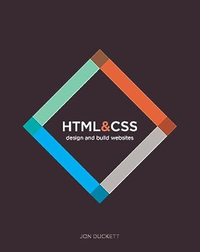

Introduction
Le métier de développeur web est au cœur de la transformation numérique. Il consiste à concevoir, développer et maintenir des sites web et applications en ligne. Cette recherche explore les compétences requises, les outils utilisés et les perspectives d'avenir pour les développeurs web dans un marché en constante évolution.
La stratégie de recherche a été structurée autour de mots-clés pertinents tels que "HTML", "CSS", "JavaScript", "React", "Node.js", "PHP", "Python", "SQL", "MongoDB", "Git", "API", "Frontend", "Backend", et "Responsiveness". Les outils utilisés incluent les moteurs de recherche comme Google et DuckDuckGo, des bases de données académiques, et des ressources spécialisées comme MDN Web Docs.
Nuage de mots-clés
Bibliographie commentée
Livre
Duckett, Jon. HTML and CSS: Design and Build Websites. Wiley, 2011.
Requête : Recherche directe sur Amazon et consultation des recommandations de développeurs web sur des forums spécialisés.
Motif du choix : Ce livre est reconnu pour son approche visuelle et sa pédagogie, idéale pour les débutants souhaitant apprendre HTML et CSS.
Lien : Amazon - HTML and CSS: Design and Build Websites
Image obtenue sur le site d'Amazon.
Article de revue
Tilkov, Stefan et Vinoski, Steve. "Node.js: Using JavaScript to Build High-Performance Network Programs." IEEE Internet Computing, 2010.
Requête : Recherche sur IEEE Xplore en utilisant les mots-clés "Node.js" et "High-Performance".
Motif du choix : Cet article analyse en profondeur l'impact de Node.js sur le développement backend moderne.
Lien : Lire sur IEEE
Image obtenue sur le site IEEE Xplore.
Site web 1
Mozilla Foundation. "Guide du développeur web." MDN Web Docs.
Requête : Recherche directe sur le site MDN et utilisation des moteurs de recherche pour accéder aux guides spécifiques.
Motif du choix : Une documentation complète et accessible sur les technologies web, essentielle pour tout développeur.
Lien : Guide du développeur sur MDN
Image obtenue sur le site de MDN Web Docs.
Site web 2
FreeCodeCamp. "Learn JavaScript." FreeCodeCamp.org.
Requête : Recherche sur Google avec les mots-clés "Learn JavaScript FreeCodeCamp".
Motif du choix : FreeCodeCamp offre des tutoriels interactifs gratuits qui sont très utiles pour pratiquer et renforcer les compétences en JavaScript.
Lien : Learn JavaScript - FreeCodeCamp

Image obtenue sur le site de FreeCodeCamp.
Vidéo
VideoTelling. "Développeur Web - C'est quoi ton métier ?"
Requête : Recherche sur YouTube avec les mots-clés "le métier de développeur" et comparaison des résultats sur Dailymotion.
Motif du choix : Cette vidéo illustre parfaitement le quotidien d’un développeur web, offrant un aperçu visuel et narratif du métier.
Vidéo obtenue sur YouTube.
Conclusion
Cette recherche a permis d'explorer le rôle crucial du développeur web dans notre société numérique. Ce métier, en constante évolution, requiert des compétences techniques solides et une capacité d'adaptation rapide. Le temps consacré à la conception et à la réalisation de cette page web s'est élevé à environ 20 heures, en utilisant des outils tels que Visual Studio Code, GitHub pour le contrôle de version, et des plateformes de recherche académique.
L'analyse des recherches a révélé une demande croissante pour les développeurs web, avec des perspectives d'emploi favorables sur les 5 à 10 prochaines années. Les principaux acteurs du secteur incluent des entreprises technologiques majeures comme Google, Facebook, et des agences de développement spécialisées. Les titres de presse tels que "Le Monde Informatique" et "Journal du Net" fournissent des informations actualisées sur le secteur.
Cet exercice a enrichi ma réflexion personnelle en confirmant l'importance des compétences en développement web sur le marché de l'emploi actuel. Il a également mis en lumière l'importance de se tenir constamment informé des nouvelles technologies et des tendances du marché.
Liste des outils utilisés
- Visual Studio Code
- GitHub
- MDN Web Docs
- Google Scholar
- Youtube
Réponses aux questions
- En quoi consiste le métier ?
Le développeur web conçoit, développe et maintient des sites et applications web, en utilisant diverses technologies et langages de programmation. - Comment accéder à ce métier ?
Par une formation en informatique ou en développement web, suivie de la maîtrise des langages de programmation et des outils de développement. - Quelles sont les perspectives d'emploi à 5 ou 10 ans ?
Les perspectives sont très favorables avec une demande croissante due à la digitalisation des entreprises et l'innovation technologique continue. - Quels sont les principaux acteurs du secteur ?
Des entreprises technologiques comme Google, Microsoft, Facebook, ainsi que de nombreuses agences de développement et startups. - Avez-vous la liste des titres de presse liés à ce secteur ?
Oui, des titres comme "Le Monde Informatique", "Journal du Net", "Les Échos" publient régulièrement des articles sur le développement web. - Où pouvez-vous trouver des offres d'emplois propres à ce secteur ?
Sur des plateformes comme LinkedIn, Indeed, Monster, ainsi que sur des sites spécialisés comme Stack Overflow Jobs et GitHub Jobs. - Quels sont les syndicats professionnels ou associations professionnelles du secteur ?
Des associations comme l'Association Française des Développeurs Web (AFDW) et des communautés en ligne comme GitHub et Stack Overflow jouent un rôle important dans le secteur.